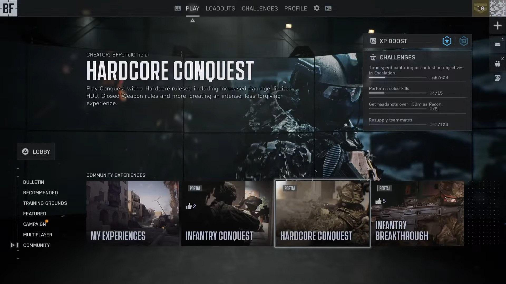

My Objective
Battlefield 6 was incredibly well received upon its launch, However upon playing it myself and hearing criticism from other players about its menu screens, I decided to redesign the UI myself as a fan project. I gathered feedback and criticism about the original UI from sources like Reddit, reviews from the Microsoft store, and with my own playtesting.
With my redesign I made it my mission to address player feedback, improve the aesthetics of the menu, and smoothen the user journey. The main screens that I focused on were the home screen, multiplayer screen, campaign screen, and server browser.
User Research
In order to make my redesign as effective as possible, I gathered all the criticism and feedback about the original UI I could and condensed it into the main things I needed to change. I already had my own opinions about the main menu, but Reddit was crucial in gathering a large amount of criticism from real people. Some of the main things that stood out were:
- Players felt that the “Netflix” style horizontal scrolling has been overused in games recently and felt it made the menu hard to navigate.
- The home screens featured area was being used mostly for advertisements.
- The main menu had a large information overload that made it hard for players to find the most popular modes, with many of them being hidden behind layers of scrolling.
- The main menu had a confusing combination of vertical and horizontal scrolling to navigate.
- Every game mode was placed in the home page, rather than having them separated like previous titles.
- The game was lacking a server browser that allowed players to see specific servers.
With these things in mind, I understood what I had to change to improve the user experience as well as to bring the aesthetics back to the classic Battlefield style while still feeling modern.
Once I had my first prototype ready, I posted it on Reddit and gathered all the feedback I could to improve my next revision. The majority of commentors loved what I had done, but a lot of people had a shared opinion that the multiplayer screen was not yet an improvement. With that in mind I took their feedback and used it to improve my next revision.
See what the Reddit community had to say about my first revision here: www.reddit.com/r/my_bf6_ui_redesign
My Updated Home Screen Vs The Original Home Screen
 |
 |
The Home Screen
My redesigned home screen pays homage to classic Battlefield titles with its design while simplifying and streamlining the order of the displayed information. From my research I found that most of the criticism about the original home screen was about its horizontal layout, its information being too cramped, and the majority of the screen being used for advertisements. My design addresses these issues by focusing on visual hierarchy, minimalism, and the user journey, ensuring that the most important options stand out clearly and are easy to access.
By removing advertisements from the home page and organizing content into its own tabs (Multiplayer, Campaign) I was able to create a clean design that allows the user to find exactly what they want, faster. Drawing inspiration from the successful layouts of Battlefield 3 and 4, the design stays consistent and familiar. I realize that the designers for the original home page had to include advertisement space as well as a larger store page as part of their requirements, but for the sake of this fan redesign I chose to remove those features to enhance my hypothetical user journey.
The most important options (Multiplayer, Campaign, Portal, Training) are placed prominently with bold, high-contrast text. This directs attention immediately to the primary actions and reduces the cognitive load for the user. Instead of overwhelming users with too many options at once, information is revealed step by step, this keeps each screen focused and digestible.
Having separate screens for multiplayer and the campaign makes it less confusing for the user to find a specific mission or game mode from the home page. Rather than the user scrolling through a confusing combination of vertical and horizontal lists, they can select either the campaign or multiplayer, and then select a mission or mode from there. While doing it this way adds steps to the user journey, it allows them to go through simpler, sequential steps instead of one overwhelming information heavy screen.
The original UI did not have separate screens for the multiplayer and campaign, so I had free reign for my designs starting with the campaign:
The Campaign Screen

 |
 |
My campaign screen continues the theme of clarity and focus established on the home screen. I ensured that visual hierarchy and immersion was prioritized on every screen. The bold “CAMPAIGN” title was used to clearly communicate where the user is, while the supporting text provides some simple context about the story. In a full prototype I would change the text to be a description of each mission rather than for just the campaign.
The use of space and minimal on-screen text demonstrates progressive disclosure, ensuring users focus on a few missions at a time rather than the entire list. I purposely made the buttons prompts at the bottom subtle to make it clear how to navigate while staying undistracting.
My design prioritizes control and immersion, removing distractions so players can move directly from setup to gameplay. The minimal style of these designs is meant to allow players to be fully immersed in the campaign before it even starts, by making the main appeal of the pages the imagery.
The Multiplayer Screen
My multiplayer screens went through the most revisions compared to the rest of the designs. The feedback I gathered from real people on Reddit heavily influenced and improved the final designs for these screens.

 |
 |
Below you can see my original mock-up on the left, a more refined version in the middle, and the final one on the right that was influenced by community feedback.
People were very vocal about disliking the large tiles I originally had and they made me realize that most of the screens these designs would be on would be at least 16 inches. This meant that I could fit more info on the screen and use smaller text sizes than I originally realized. The final version of my design focused on presenting the game modes in a clear, structured layout.
Ditching the original large tile design allowed me to fit much more info on the screen while still keeping it simple. The layout of the final design allows the user to quickly scan through every mode rather than have to scroll through a long list. The server browser mode is visually separated from the rest to highlight that it is not a traditional game mode like the rest.
 |
 |
|
The Server Browser Screens

 |
 |
My server browser design focuses on clarity, control, and usability - in contrast to the showy campaign screens. The layout organizes server data into a structured bar, that is then presented in a vertical list. This creates a strong information hierarchy and reduces visual clutter, making it easier to locate familiar servers or maps. Having a text only layout would make each server look too similar, so to improve accessibility and clarity I added a small thumbnail. The thumbnail acts like a visual anchor that lets users quickly identify different servers, and it can even allow them to find one they want without reading any text. The buttons at the bottom were designed to feel familiar and intuitive. The clear text along with their icons ensures users dont get confused about any of their functions. I went for a familiar Battlefield design style that makes the interface instantly understandable to returning players, shortening their learning curve.
By streamlining the presentation of all the server data and removing any unneeded visuals, my design improves efficiency while not overloading users with too much information. This makes browsing servers a fast and smooth experience that allows users to spend more time in the game rather than the menu.
(Extra) The Armory and Customize Screens
 |
 |
These two screens weren't the main focus of my redesign, but I still created my own mockups for fun. These screens were particularly challenging to redesign due to there being a limited number of images of them I could use. I also couldnt find any good enough quality images of just the characters so I had to stick to full screenshots. The icons for the customize screen were also too low resolution for me to extract individually which led to me having to use the toolbar from the original game, just recoloured.
Both these designs use the same navigation bar at the bottom to keep things consistent, since they are connected to the multiplayer screen. I opted to use the bumper buttons to navigate through the screens because it allows for the left stick to be free to navigate through buttons like the classes and gear. In contrast to the screens from the original game, I went for a slightly less information heavy design to give both screens a cleaner and less distracting feel.
Final Thoughts
Overall, I am super happy with how my redesigns turned out. This was my favourite major UI/UX project and I learned lots about several UX design principles. Working with a game Im a long time fan of like Battlefield made this an extra exciting design for me. Seeing all the community compliments and feedback on Reddit made me very proud, but it also gave me valuable insights that made my final project much stronger. I left many features out of my redesign like the store, advertisement space, and more, and leaving them out only made me realize how much bigger of a job full-scale UI design is than I thought. I also want to say that I never disliked or hated any of Battlefield 6s original screens, I just took on this redesign as a fun side project.
Michael Gvozdek 2025